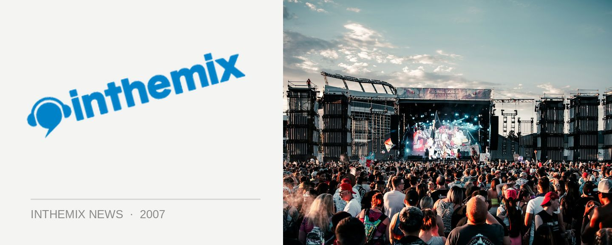

Harbourlife lineup announced!
The announcements are coming thick and fast at the moment, and now we’ve got the official lineup of artists that we’ll be seeing at Fuzzy’s annual Harbourlife party this year. Returning to Fleet Steps, Mrs Macquarie’s Point on Saturday 24th November, tickets to the event sold out in record time last year so if you’re looking to get some harbour action this year then have your credit cards at the ready midday on Wednesday 26th September.
Here’s the lineup of acts that will be playing Harbourlife this year!
Tim Deluxe
Switch
Boys Noize
The Glimmers
Ajax
Jonathan Wall
Tim Sea
+more